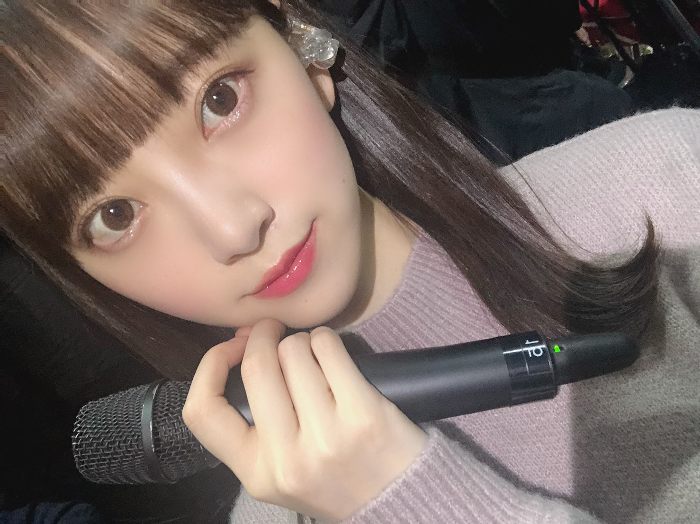
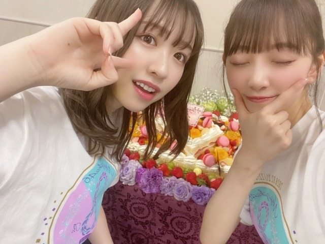
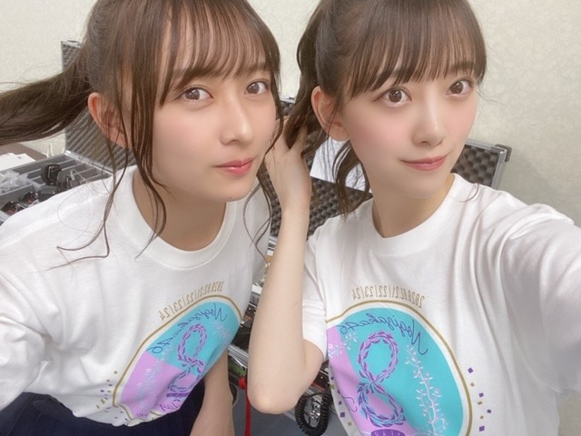
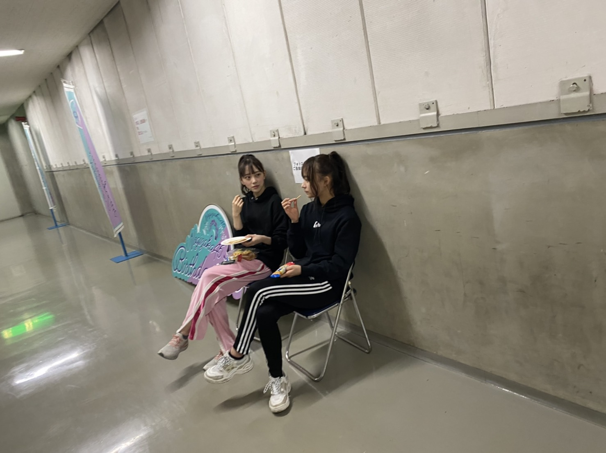
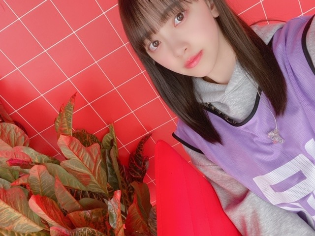

2020/0225Tue今夜放送
本日25:45〜フジテレビにて
乃木坂シネマズ〜STORY of 46〜第6話「納品ウォーズ」
放送です！！！
念願のアクション。たくさん練習して挑みました！
アクションでバキバキ動いてるイメージが無いと思いますが陸上部だったので結構動き回るの好きです。笑
是非見てください✨✨
スカッとしますよ〜

そして、8th year バースデーライブ4日間無事完走しました！



そして3月7日の2期生ライブに向けて切り替えてまた頑張ります✨✨

ドラマの感想お待ちしています！
いろんな役もっとできるようにがんばらなきゃ。
ではでは
2020/02/25 15:42
コメント(371)
バスラお疲れ様でした！最高やった！
未央奈〜
大好き
大好き
バスラお疲れ様〜
めっちゃ良かった！
体調に気をつけて2期生ライブもがんばって！
めっちゃ良かった！
体調に気をつけて2期生ライブもがんばって！
バスラ4日間お疲れ様！！！
最終日だけ観に行ったんだけど、席がセンターステージの超近くで堀ちゃんのダンスと表現に終始見惚れてました。最高の週末をありがとう！
ゆっくり休んでね！納品ウォーズ、FODでもう見ちゃったけど、バスラの余韻に浸りながら今夜また見ます笑
握手会楽しみにしてるね！！
最終日だけ観に行ったんだけど、席がセンターステージの超近くで堀ちゃんのダンスと表現に終始見惚れてました。最高の週末をありがとう！
ゆっくり休んでね！納品ウォーズ、FODでもう見ちゃったけど、バスラの余韻に浸りながら今夜また見ます笑
握手会楽しみにしてるね！！
未央奈～。 バースデーライブお疲れ様でした。 次は2期生単独ライブですね。❗️今から楽しみで仕方ありません。楽しませて下さいね。よろしく ね。ラブ ♥️❤️
バースデイライブお疲れ様！！
二期生ライブに向けて頑張ってね。
二期生ライブに向けて頑張ってね。
バスラ4日間お疲れ様！
2日目は会場、最終日はライブビューイングで観たよ！
本当に楽しかった！
沢山、堀ちゃんも観る事ができて嬉しかった！
納品ウォーズ、ちょっと前にFODに加入して見たよ！
メッチャカッコ良かった！
2日目は会場、最終日はライブビューイングで観たよ！
本当に楽しかった！
沢山、堀ちゃんも観る事ができて嬉しかった！
納品ウォーズ、ちょっと前にFODに加入して見たよ！
メッチャカッコ良かった！
バサラ2日目の未央奈の変顔可愛かったよー！
ブログ更新いつもありがとー！
ブログ更新いつもありがとー！
ブログ更新ありがとうございます！
携帯で見たけど未央奈らしい独特な世界観でめちゃくちゃ楽しめた！
俺も将来アクションしてみたい！笑
バースデーライブお疲れ様でした！
最終日いきました！
ありがとうございました！
爆上がりで、感動や笑いの要素もあったライブですごく楽しめました！
その場で実際の空気感を味わうことが出来て良かったです！
しあわせの保護色 素晴らしい曲でした！
泣きました！
前向きで乃木坂らしい曲これからも着いていくのでよろしくお願いします！
携帯で見たけど未央奈らしい独特な世界観でめちゃくちゃ楽しめた！
俺も将来アクションしてみたい！笑
バースデーライブお疲れ様でした！
最終日いきました！
ありがとうございました！
爆上がりで、感動や笑いの要素もあったライブですごく楽しめました！
その場で実際の空気感を味わうことが出来て良かったです！
しあわせの保護色 素晴らしい曲でした！
泣きました！
前向きで乃木坂らしい曲これからも着いていくのでよろしくお願いします！
バスラヽ(￣▽￣)ノお疲れ様ッス(*´∀｀)ドラマ 見るね ♪ヽ(´▽｀)/
みおなちゃんブログ更新ありがとう！！
バースデイライブお疲れ様です
はやく円盤にならないかなーと既に思ってます！！
今回ライブには行けなかったけど
推しタオル買ったよ〜 大切にします！
今日のドラマ楽しみにしてます！！
バースデイライブお疲れ様です
はやく円盤にならないかなーと既に思ってます！！
今回ライブには行けなかったけど
推しタオル買ったよ〜 大切にします！
今日のドラマ楽しみにしてます！！
バスラお疲れ様です！
納品ウォ―ズ、二期生ライブ楽しみにしてます！
コロナとか流行ってるので無理なさらず頑張ってください！
納品ウォ―ズ、二期生ライブ楽しみにしてます！
コロナとか流行ってるので無理なさらず頑張ってください！
ありがとございます
いつも応援してます


いつも応援してます
ライブお疲れ様でした~♡
みおなちゃんがいっぱいでてて嬉しかった♡
ぱっつん前髪推しです！
これからも応援してます‼︎
みおなちゃんがいっぱいでてて嬉しかった♡
ぱっつん前髪推しです！
これからも応援してます‼︎
バスラ4日間お疲れ様！
すっごく可愛かったよ！ワタボコリとか別れ際の演出とかも新しくて最高だったなぁ〜。めちゃくちゃ思い出になるライブだった！！！
2期生ライブも頑張ってね！行くよ！楽しみにしてるー！
すっごく可愛かったよ！ワタボコリとか別れ際の演出とかも新しくて最高だったなぁ〜。めちゃくちゃ思い出になるライブだった！！！
2期生ライブも頑張ってね！行くよ！楽しみにしてるー！
未央奈ちゃん、ブログ更新ありがとう！
乃木坂シネマズ楽しみ!!
バスラ4日間お疲れ様!!
ゆっくり休んで次のお仕事頑張ってね！
またね！
乃木坂シネマズ楽しみ!!
バスラ4日間お疲れ様!!
ゆっくり休んで次のお仕事頑張ってね！
またね！
堀ちゃん、早速ブログ更新ありがとう。
地元名古屋での8thバスラ4日間お疲れ様でした。
ライブビューイングで参加しました。
新曲初披露含め50曲、素敵でした。
選抜チーム、2期生チーム、アンダーチーム全てに参加して
牽引して下さいました。
エンディングでのMCで未央奈の乃木坂46愛が伝わったよ！
今夜のドラマも楽しみにしてる。
写真集も待ち遠しいですよ。
まずは、ゆっくり休んで、お身体メンテナンスして下さい。
あ、代々木の２期生ライヴはチケット当選したので
これも楽しみです！
地元名古屋での8thバスラ4日間お疲れ様でした。
ライブビューイングで参加しました。
新曲初披露含め50曲、素敵でした。
選抜チーム、2期生チーム、アンダーチーム全てに参加して
牽引して下さいました。
エンディングでのMCで未央奈の乃木坂46愛が伝わったよ！
今夜のドラマも楽しみにしてる。
写真集も待ち遠しいですよ。
まずは、ゆっくり休んで、お身体メンテナンスして下さい。
あ、代々木の２期生ライヴはチケット当選したので
これも楽しみです！
バースデーライブお疲れ様でした！！21日に行きましたが、とってもとっても楽しいライブでした！！納品ウォーズも既にFODで見ましたが、地上波でまた見れるのが楽しみです！
ブログ更新ありがとう！！本当にお疲れ様です！！
バスラ3日目だけしか行けませんでしたが、とっても良かったです！！今までの歌が数多く聴けたのと、パフォーマンスに感動しました！！本当に素晴らしいライブをありがとうございます！！
これからもタオルを持ってしっかり応援します！！
ドラマももちろん見ます！！
バスラ3日目だけしか行けませんでしたが、とっても良かったです！！今までの歌が数多く聴けたのと、パフォーマンスに感動しました！！本当に素晴らしいライブをありがとうございます！！
これからもタオルを持ってしっかり応援します！！
ドラマももちろん見ます！！
二期生ライブ当たったので楽しみです！
ブログ更新ありがとう！
8thライブお疲れ様！
次は２期生ライブですね！頑張って
シネマズ見ますね！
またねー
8thライブお疲れ様！
次は２期生ライブですね！頑張って
シネマズ見ますね！
またねー
でも関テレやってないつらい
ブログ更新ありがとう！
今日もかわいい！
今日もかわいい！
乃木坂シネマズ、今まで中々観れてなかったけど、
今日は堀ちゃんということで、絶対みるぞ！！
そして、バスラ4日間お疲れ様！
今日は堀ちゃんということで、絶対みるぞ！！
そして、バスラ4日間お疲れ様！
4日間お疲れ様でした！！
どの曲でも可愛いかったりカッコ良かったりする未央奈ちゃんが見られてとっても楽しかったです！
次は2期生ライブですね。バスラが終わってすぐなので大変だと思うけど頑張ってください！行けるかは分からないけど応援してます！
風邪などならないように体調に気を付けてください。
どの曲でも可愛いかったりカッコ良かったりする未央奈ちゃんが見られてとっても楽しかったです！
次は2期生ライブですね。バスラが終わってすぐなので大変だと思うけど頑張ってください！行けるかは分からないけど応援してます！
風邪などならないように体調に気を付けてください。
お疲れさま。
今年も最高のバスラをありがとう。
とても感動的なライブでしたね。
２期ライブも楽しみにしてます。ハードスケジュールですが体調崩さずまた最高のパフォーマンス見せて下さい。
４日間ご苦労様でした。
今年も最高のバスラをありがとう。
とても感動的なライブでしたね。
２期ライブも楽しみにしてます。ハードスケジュールですが体調崩さずまた最高のパフォーマンス見せて下さい。
４日間ご苦労様でした。
ブログ更新ありがとう
未央奈ちゃん可愛い
ライブお疲れ様ー、最高だったよー
未央奈ちゃん可愛い
ライブお疲れ様ー、最高だったよー
未央奈ブログ更新ありがとう！
バスラ4日間お疲れ様っ！
次は二期ライブ！一般チケット取れるように頑張るね(>_<)
未央奈のアクションシーンかっこよくて似合ってるから
もっともっとチャレンジして欲しいなぁ〜！
っていうかもっと未央奈の演技みたい！(^^)
バスラ終わってすぐ二期ライブあるし忙しいと思うけど
体調に気をつけてね！応援してます！！
次のブログも楽しみに待ってるよ〜！
バスラ4日間お疲れ様っ！
次は二期ライブ！一般チケット取れるように頑張るね(>_<)
未央奈のアクションシーンかっこよくて似合ってるから
もっともっとチャレンジして欲しいなぁ〜！
っていうかもっと未央奈の演技みたい！(^^)
バスラ終わってすぐ二期ライブあるし忙しいと思うけど
体調に気をつけてね！応援してます！！
次のブログも楽しみに待ってるよ〜！
見るよー。FODでは携帯で見たからおっきな画面で見れるのが楽しみ。
birthday liveお疲れ様でした。DAY4のみでしたが、ライブ神、ワタボコリ、別れ際が披露されて嬉しかったです。新曲も聴けました^ ^
未央奈ちゃん歌上手くなったねー。
birthday liveお疲れ様でした。DAY4のみでしたが、ライブ神、ワタボコリ、別れ際が披露されて嬉しかったです。新曲も聴けました^ ^
未央奈ちゃん歌上手くなったねー。
バスラを観ての感想！
未央奈、殻を破れ！！
YELL
未央奈、殻を破れ！！
YELL
未央奈ちゃん、バスラ4日間お疲れ様✨
2日目と最終日に参加して、未央奈ちゃんの応援たくさんしたよ〜✨
ポニテールの髪型似合ってたし、たくさんの曲を聴けて楽しかった
二期生ライブで、大変だと思うけど体調に気をつけて頑張ってね！
2日目と最終日に参加して、未央奈ちゃんの応援たくさんしたよ〜✨
ポニテールの髪型似合ってたし、たくさんの曲を聴けて楽しかった
二期生ライブで、大変だと思うけど体調に気をつけて頑張ってね！
更新ありがとう!
バスラお疲れ様でした!
ライブには行けなかったけど神奈川まで<しあわせの保護色>聴こえたよ笑
どんなMVになるのかとっても楽しみです!
しあわせは近くにあるものなんですね
明日は卒業遠足に行くんだぁー
本当はディズニーに行く予定だったけどコロナウイルスさんの影響で八景島シーパラダイスに行くことになりました
ついてないなぁーと思いながら明日の天気見たらまさかの雨泣
きっと2期生ライブのために運を貯めているのですね!(そう思いたい)
だけど班に乃木坂ファンの仲間がいるから乃木坂の話できる!
たくさん美味しいもの食べてきます!
ゆっくり休んで2期生ライブも頑張ってね!
2期生ライブのグッズ欲しい
大好き!
バスラお疲れ様でした!
ライブには行けなかったけど神奈川まで<しあわせの保護色>聴こえたよ笑
どんなMVになるのかとっても楽しみです!
しあわせは近くにあるものなんですね
明日は卒業遠足に行くんだぁー
本当はディズニーに行く予定だったけどコロナウイルスさんの影響で八景島シーパラダイスに行くことになりました
ついてないなぁーと思いながら明日の天気見たらまさかの雨泣
きっと2期生ライブのために運を貯めているのですね!(そう思いたい)
だけど班に乃木坂ファンの仲間がいるから乃木坂の話できる!
たくさん美味しいもの食べてきます!
ゆっくり休んで2期生ライブも頑張ってね!
2期生ライブのグッズ欲しい
大好き!
こんにちは。
4日間バースデーライブお疲れ様でした。
見に行きました。
楽しかったです。
ドラマ楽しみにしています。
4日間バースデーライブお疲れ様でした。
見に行きました。
楽しかったです。
ドラマ楽しみにしています。
未央奈
 先ずバスラお疲れ様でした、3日目に参戦させて頂きました
先ずバスラお疲れ様でした、3日目に参戦させて頂きました モニターに未央奈が映ってるときテンション爆上げでした、次は二期生ライブですね
モニターに未央奈が映ってるときテンション爆上げでした、次は二期生ライブですね 頑張ってねん
頑張ってねん 力の限り応援します今日の放送見ます未央奈だぁーすき
力の限り応援します今日の放送見ます未央奈だぁーすき
更新ありがとう‼︎
バスラお疲れ様でした(^_^)
四日間とも参加しましたが、未央奈さんが1番輝いていました‼︎
まだ二期生ライブが残っていますが、体調に気をつけて走り抜けてください。
いつも元気をありがとうございます‼︎
バスラお疲れ様でした(^_^)
四日間とも参加しましたが、未央奈さんが1番輝いていました‼︎
まだ二期生ライブが残っていますが、体調に気をつけて走り抜けてください。
いつも元気をありがとうございます‼︎
バスラお疲れ様でした。
絢音ちゃんとお菓子食べてる写真なんか良いね。
自然な感じで好きです。
絢音ちゃんとお菓子食べてる写真なんか良いね。
自然な感じで好きです。
バスラお疲れ様でした！めちゃくちゃ楽しい時間を過ごせました。最終日レスを貰えたことは一生の思い出です。笑
休む時間とかないかもしれないけど、体調第一なので、気をつけて下さい。
幸せな時間をありがとう
曲振りした時優勝してました。！
休む時間とかないかもしれないけど、体調第一なので、気をつけて下さい。
幸せな時間をありがとう
曲振りした時優勝してました。！
こんにちわ。
納品ウォーズほんとスカッとするよね。
堀ちゃんアクション系もいけるね。
これからも色んな役やれるといいね。
そしてバスラ４日間お疲れ様でした。今日はゆっくり休んでね。
納品ウォーズほんとスカッとするよね。
堀ちゃんアクション系もいけるね。
これからも色んな役やれるといいね。
そしてバスラ４日間お疲れ様でした。今日はゆっくり休んでね。
未央奈の存在大きいよ！
これからの乃木坂も楽しみだ
これからの乃木坂も楽しみだ
未央奈ちゃんバスラお疲れ様。2期のLIVEも頑張って！！
バスラお疲れ様
おつかれ！
未央奈ちゃん、こんにちは〜
次は2期生ライブだね。
タイトなスケジュールだよね？
同じ楽曲でもバスラと違う
演出になるだろうから
覚える事が沢山あるよね？
2期生しかいないから
ずーっとステージ上にいる事になるし…
スゴイと思えるのは
そういう状況でも疲れたとか辛いという
ネガティブワードが出てこない所。
「無理しないで」
と言うのが無理かもしれんけど
少しでも元気になれる様に
応援する事にします。
ドラマの感想はまたどこかで…
では。
次は2期生ライブだね。
タイトなスケジュールだよね？
同じ楽曲でもバスラと違う
演出になるだろうから
覚える事が沢山あるよね？
2期生しかいないから
ずーっとステージ上にいる事になるし…
スゴイと思えるのは
そういう状況でも疲れたとか辛いという
ネガティブワードが出てこない所。
「無理しないで」
と言うのが無理かもしれんけど
少しでも元気になれる様に
応援する事にします。
ドラマの感想はまたどこかで…
では。
FODで先に見ちゃいました！！
とっても見応えがありました！
そして、バスラお疲れ様です！
これからも頑張ってください！
とっても見応えがありました！
そして、バスラお疲れ様です！
これからも頑張ってください！
バースデーライブお疲れ様です！4日目の最終日に参戦しました！！！元々なぁ推しで卒業しちゃってから次の推しを決めれなくて、辿り着いたのが未央奈ちゃんでした 最終日に推しメンタオルも買ったので正式に推しですw 女子力高くて服とかメイクがすっごくタイプです！これからずっと推しメン！として応援しています！ 楽しいライブをありがとう❤️
未央奈ちゃんブログ更新ありがとう！
バスラお疲れ様！
またコメントします！
バスラお疲れ様！
またコメントします！
バスラほんとにお疲れ様！！全日参加させてもらいました！
初日のfree＆easyで未央奈の煽りから始まったの、すごい嬉しかった！！ユニットの可愛い曲も最高だったし、サンエトの曲はとても染みました、、
日奈子との行くあてのない僕たちも、2人だからこそ伝わってくるものがあって心動かされました。。
個人的にようやく未央奈のタオル買えたのがちょー嬉しい
ドラマもこの前見たよ！めっちゃ良かった！演じてる役の雰囲気とかストーリーも伝わったし、カッコよかった
仕事への姿勢、考え方、普段の生活に関してもだけど見習うとこが多くてほんとに尊敬してます！忙しいなかブログ含めいろんなとこでたくさん情報発信してくれてほんとにありがとう！！
あとはもう可愛すぎて苦しいです大好きです
今までで以上にこれからの乃木坂に未央奈の力は絶対必要だから、これからも未央奈らしく頑張れ！ずっと応援してます！
初日のfree＆easyで未央奈の煽りから始まったの、すごい嬉しかった！！ユニットの可愛い曲も最高だったし、サンエトの曲はとても染みました、、
日奈子との行くあてのない僕たちも、2人だからこそ伝わってくるものがあって心動かされました。。
個人的にようやく未央奈のタオル買えたのがちょー嬉しい
ドラマもこの前見たよ！めっちゃ良かった！演じてる役の雰囲気とかストーリーも伝わったし、カッコよかった
仕事への姿勢、考え方、普段の生活に関してもだけど見習うとこが多くてほんとに尊敬してます！忙しいなかブログ含めいろんなとこでたくさん情報発信してくれてほんとにありがとう！！
あとはもう可愛すぎて苦しいです大好きです
今までで以上にこれからの乃木坂に未央奈の力は絶対必要だから、これからも未央奈らしく頑張れ！ずっと応援してます！
ライブお疲れ様でした！感謝でいっぱいです！
自分はバスラ1日目だけの参戦でしたけどすごく楽しかったです！2期生ライブ行きたいけど福岡からじゃ遠くて行けそうになくてすごく悔しいです。遠くから応援しています！お体に気をつけて頑張ってください


四日目のライブビューイングで参加しました。
二期生ライブもライブビューイング無いんですかね？
楽しんでくださいね。